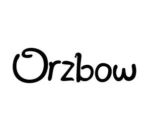

Trade Mark Journal No.2025/049 5 December 2025
UK00004298628 21 November 2025 (10,11,12,18,20,21,24,28)

- Class 10
- Teething rings; Baby teething rings; Teething rings incorporating baby rattles; Baby feeding pacifiers; Covers for baby feeding bottles; Pacifiers for babies; Gum massagers for babies; Nasal aspirators; Infants' pacifiers; Clips for pacifiers.
- Class 11
- Electric warmers for baby wet wipes; Electric warmers for feeding bottles; Electric heaters for baby bottles; Toilet bowls for children; Toilet seats for children; Toilet seats; Bath tubs; Bath tubs for sitz baths; Toilets, portable; Portable toilets.
- Class 12
- Covers for baby carriages; Covers for baby strollers; Fitted footmuffs for baby carriages; Canopies for baby strollers; Bags adapted for pushchairs; Bags adapted for strollers; Fitted footmuffs for pushchairs; Fitted footmuffs for strollers; Fitted footmuffs for prams; Covers for pushchairs; Pushchair covers; Stroller covers; Pushchair covers and hoods; Covers for perambulators; Pushchair hoods; Stroller hoods; Fitted pushchair mosquito nets; Fitted stroller mosquito nets.
- Class 18
- Baby carriers [slings or harnesses]; Baby carriers worn on the body; Slings for carrying babies; Baby backpacks; Pouch baby carriers; Toilet bags; Travelling bags; Diaper bags; Travel bags; Slings for carrying infants; Toiletry bags; Infant carriers worn on the body; Reins for guiding children; Crossbody bags; Travel cases; Travelling cases; Backpacks; Nappy wallets.
- Class 20
- Baby bolsters; Reusable baby changing mats; Electric baby cradles; Baby changing platforms; Baby changing tables; Baby gates; Cribs for babies; Cots for babies; Playpens for babies; Anti-roll cushions for babies; Portable baby bath seats for use in bath tubs; High chairs for babies; Mats for infant playpens; Non-metal safety gates for babies, children, and pets; Seats for children; Furniture for children; Seats adapted for babies; Bumper guards for cots, other than bed linen; Changing tables for babies; Rocking chairs.
- Class 21
- Baby baths; Baby bathtubs; Baby baths, portable; Baths (Baby -), portable; Portable baby baths; Stands for portable baby baths; Baby bath tubs; Inflatable bath tubs for babies; Foldable bath tubs for babies; Plastic bathtubs for children; Training cups for babies and children; Feeding cups for children; Cleaning brushes for feeding bottle teats; Brushes for cleaning babies' feeding bottles; Babies' potties; Cleaning brushes for feeding bottles; Training cups for babies; Toilet potties; Portable potties for children; Children's potties.
- Class 24
- Baby blankets; Diaper changing cloths for babies; Baby buntings; Sleeping bags for babies; Cot covers; Nets (Mosquito -); Insect protection nets; Crib bumpers [bed linen]; Children's blankets; Table runners of textile; Cloth bunting; Mesh-woven fabrics.
- Class 28
- Baby rattles incorporating teething rings; Baby rattles; Baby swings; Infant toys; Infants' action crib toys; Infants' swings; Infants' swing seats; Crib toys; Bathtub toys; Infant development toys; Plush toys with attached comfort blanket; Crib mobiles; Children's toys; Children's multiple activity toys; Plush toys; Smart plush toys.
Nanjing Kite Culture Media Co., Ltd.
Representative: IPP MASTER